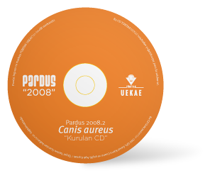

A new step for freedom :
Pardus 2008.2 Canis aureus

The second update release of Pardus 2008, Pardus 2008.2 Canis aureus is out. This release contains all the bugfixes and improvements made since the release of 2008.1.
Pardus 2008.2 is named after Canis aureus, an native anatolian jackal whose own habitats are in constant danger. As always, Pardus 2008.2 Canis aureus is released under GPL and can be freely distributed.
Pardus 2008.2 Canis aureus is released as two flavours of live and install CD's : One install CD in English and Turkish, one in all supported languages and one Live CD based on KDE3, and finally one Live CD based on on KDE4.
You can read Pardus 2008.2 relase notes in
English,
German,
Spanish,
French and
Swedish.
Please visit our Download page for instructions on how to get this Pardus release.
|
 Pardus News Pardus News |
 January, 30, 2009
// 2008.2 release can be found at our download page.
January, 30, 2009
// 2008.2 release can be found at our download page.
Sept, 15, 2008
// 2008.1 release can be found at our download page.
June, 29, 2008
// A test drive of stable release of 2008 can be found here
June, 21, 2008
// A review of Pardus 2008 RC2 can be found here
June, 11, 2008
// A review of Pardus 2008 RC1 can be found here
March, 19, 2008
// A recent review of 2007.3 can be found here
|
|